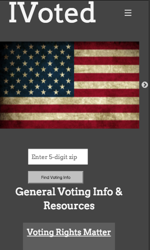

Projects
IVoted
IVoted is a one-stop-shop for voters to get the information they need to register, get to the polls, and select candidates. This app is designed to organize relevant voting information from across the web for voters.This mobile-first web app is built in Rails using Foundation and scoured the web to pull together disparate sources of data to present each user with the information they need, the app presents data to the user in the form of a simple, user-friendly report.
